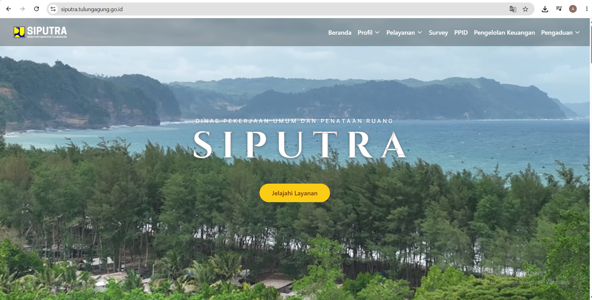

About the Project
SIPUTRA Tarung is a government website redesign project focused on improving the structure, usability, and visual experience of the platform.
Complex Interface
The existing website had a complex information structure and interface that could make it difficult for users to find and understand the information they needed.
Intuitive Design
I redesigned the interface by improving the information hierarchy, navigation structure, and visual consistency to create a clearer and more intuitive user experience.
Workflow Step-by-Step
Existing Website
UX Analysis
Information Architecture
Wireframe
UI Design
Development
What Improved In The Redesign
Klik pada kartu di bawah untuk melihat rincian close-up & breakdown perbaikan.
Improved Information Hierarchy
Menata ulang pengelompokan menu dan visual tata letak.
Simplified Navigation
Struktur menu dibuat lebih simpel dan mudah dijangkau.
Redesigned Page Layouts
Penyesuaian tata letak card, tabel, dan komponen visual.
Responsive Mobile Interface
Tampilan mobile friendly dan nyaman diakses dari smartphone.
Interface Showcase

Desktop View: Layout & Data Structure

Mobile View: Responsive Layout
Final Result 🚀
The redesign provides a cleaner and more structured interface, making information easier to navigate while creating a more modern digital experience for users.
Visit Live Website →What I Learned 💡
This project strengthened my understanding of information architecture and taught me how to balance user needs, content complexity, and technical implementation in a real-world website.